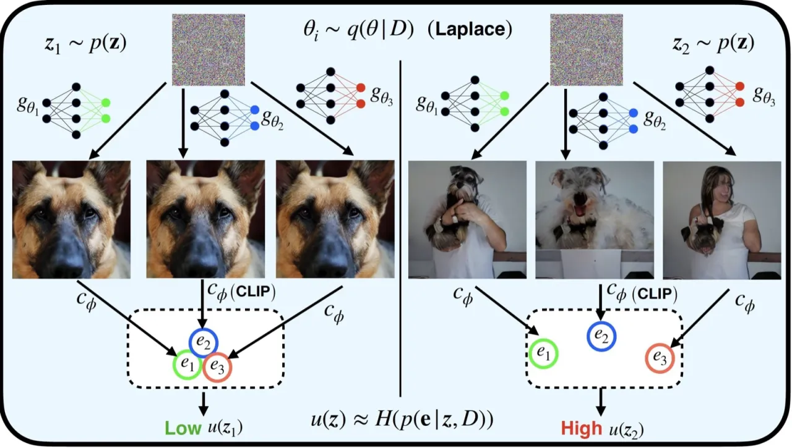
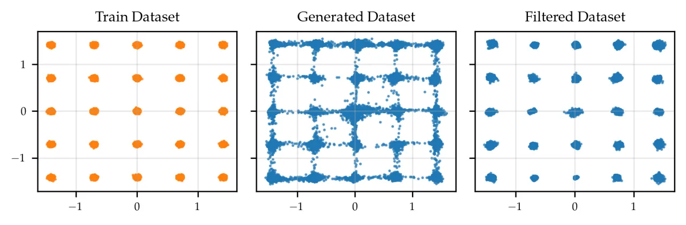
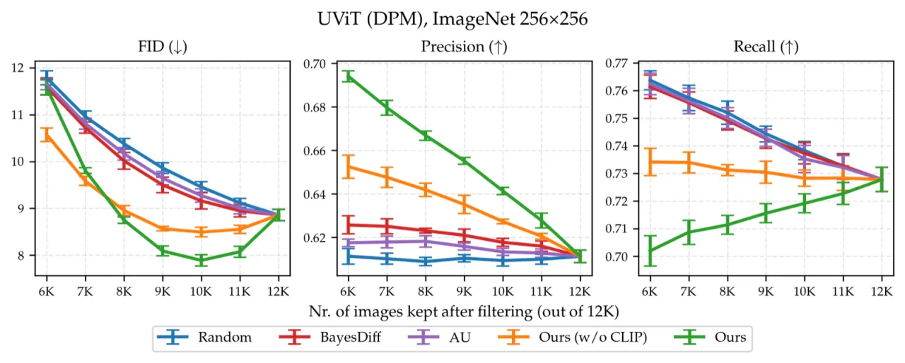
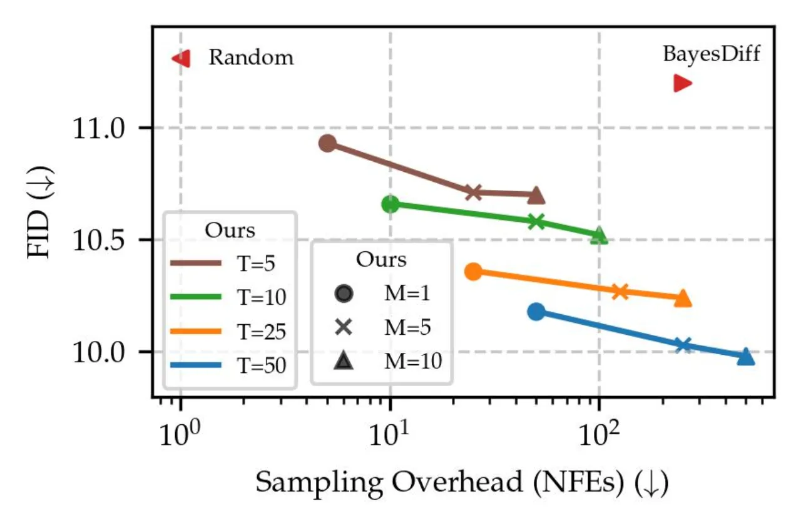
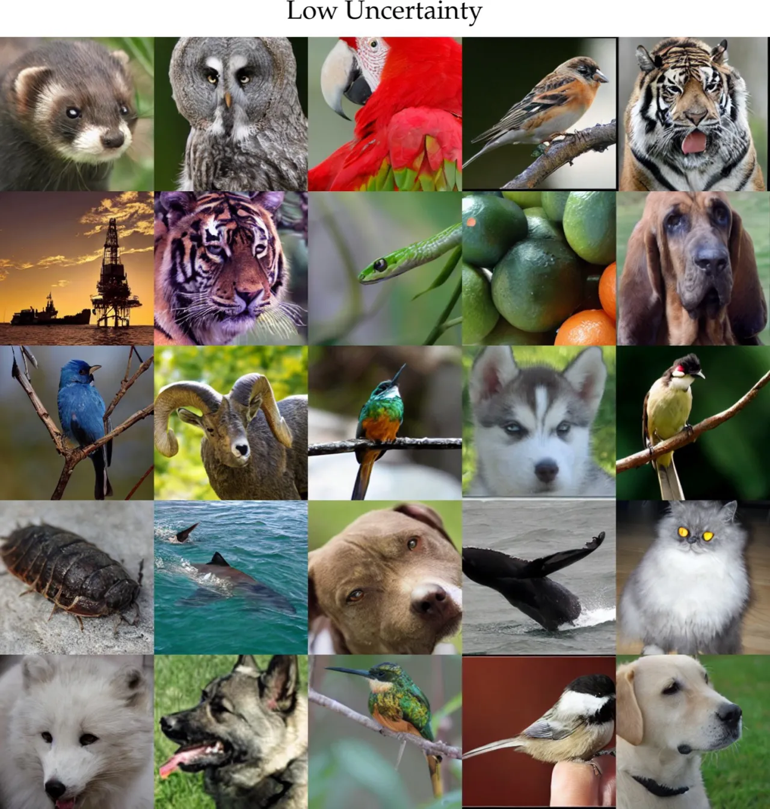

扩散模型整体生成质量很高，但单次生成仍可能出现伪影或与条件不符的情况。本文提出"生成不确定性"（generative uncertainty）概念，借助 Laplace 近似将贝叶斯推断扩展到数十亿参数的大型扩散模型，通过语义似然度在潜空间中量化每张图像的不可靠程度，无需人工标注即可自动过滤低质量样本，从而显著提升生成集合的整体质量。
扩散模型平均生成质量虽高，但单次采样仍会产生含有伪影的低质量图像，现有方法只能依赖人工审核来筛选——这既费时又难以规模化。
"How can Bayesian principles help us detect poor generations?" 如何用贝叶斯原则自动检测低质量生成样本？

核心思路：把分类任务中"预测不确定性"（predictive uncertainty）的概念迁移到生成模型——用后验预测分布的方差来衡量每个样本的可靠程度，并借助 last-layer Laplace approximation 和语义似然使之在大型模型上高效可行。

对于给定的隐变量 z，生成不确定性定义为后验预测分布的变分度（variability）：
u(z) := V(p(x | z, D))
其中 V(·) 为熵（entropy），p(x | z, D) 通过对参数后验积分得到。高 u(z) 意味着不同参数设置会产生差异显著的输出，即该样本是不可靠的。
对超过 1 亿参数的扩散模型直接做完整贝叶斯推断计算上不可行。本文只在模型最后一层施加 Laplace 近似，将参数后验近似为高斯分布：
q(θ | D) = N(θ | θ̂, Σ)，其中 Σ = (∇²_θ L(θ; D)|_θ̂)⁻¹
这样仅需在训练后一次性计算 Hessian 逆，无需重新训练，天然兼容任意预训练扩散或 Flow Matching 模型（post-hoc 方法）。
像素空间的似然在高维情况下失效（维度诅咒）。本文引入基于预训练编码器（如 CLIP）的语义似然：
p(x | g_θ(z); φ) = N(e(x) | c_φ(g_θ(z)), σ²I)
将生成图像和目标图像都投影到语义特征空间，再计算 Gaussian 似然。这使不确定性估计关注视觉语义质量而非像素级细节，大幅提升了对低质量样本的识别能力。
在 ImageNet 256×256 上分别使用 UViT 和 ADM 两个扩散模型进行评估，与随机基线、BayesDiff 以及 aleatoric uncertainty (AU) 方法对比，指标为 FID、Precision、Recall。
| 模型 / 方法 | n=10K FID ↓ | Precision ↑ | 备注 |
|---|---|---|---|
| Ours (UViT) | 7.89 | ~0.73 | M=5, T=50 |
| BayesDiff (UViT) | 9.16 | ~0.67 | — |
| AU / Aleatoric Unc. | 9.20 | — | — |
| 随机基线 | 9.45 | — | — |
| Ours (ADM) | 10.36 | — | M=1, T=25（轻量版） |
| BayesDiff (ADM) | 11.20 | — | — |
| 随机基线 (ADM) | 11.31 | — | — |



语义似然依赖 CLIP 等预训练图像编码器，导致方法仅适用于自然图像领域。对于分子结构、文本、音频等其他扩散模型擅长的模态，目前暂无合适的编码器，方法无法直接迁移。
作者明确指出："Applying the Laplace approximation directly, without such reweighting, is not fully theoretically justified"——扩散模型的训练损失包含时间步加权，不严格符合 Laplace 理论要求的 likelihood + prior 形式，因此后验近似的理论保证存在缺口。
为保持计算可行性，采用对角（diagonal）last-layer Laplace 近似，忽略参数间协方差。这可能无法完整捕捉真实后验的复杂结构，使不确定性估计的精度受限。论文作者也指出需要更系统地比较不同推断方法。
过滤高不确定性样本会降低 recall（即样本多样性），这与其他基于 guidance 的过滤方法面临的问题一致。用户在追求质量提升的同时需接受一定程度的多样性损失。
在 ImageNet 1000 类的条件生成中，不同类别的高不确定性比例不同，过滤后类别分布发生偏移，可能影响某些需要均匀类别覆盖的下游应用。